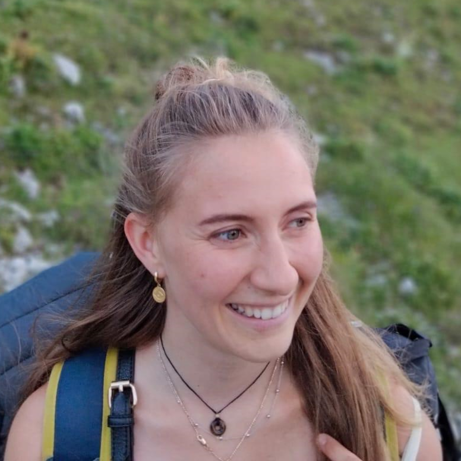
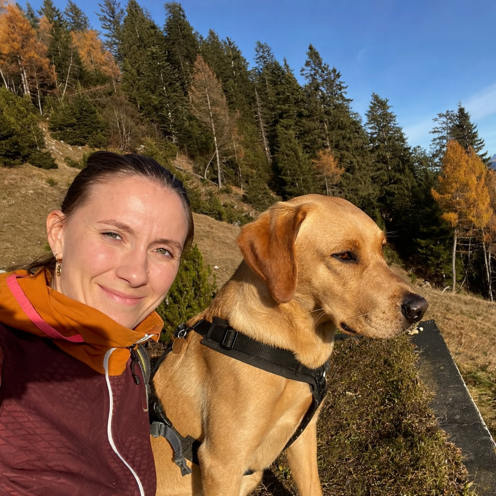

Hausbesuche in Hall & Umgebung
Vertragstherapeutin Schlaganfallpfad Tirol & Land Tirol nach dem TTHG
Wahltherapeutin alle Kassen
Ergotherapie unterstützt Menschen jeden Alters dabei, für sie wichtige Aktivitäten wieder sicher und selbstständig ausführen zu können- sei es nach einer Verletzung, Erkrankung oder zur Prävention.
Im Mittelpunkt steht immer der Mensch mit seinen*ihren individuellen Bedürfnissen, Wünschen und Fähigkeiten. Gemeinsam erarbeiten wir Wege, um Ihre Ziele zu erreichen.
Manche Menschen können Dinge nicht so gut selber machen.
Weil sich manche Menschen nicht gut konzentrieren.
Oder die Hände nicht gut bewegen.
Die Menschen möchten die Dinge selber Machen.
Ergotherapie hilft dabei.
In der Ergotherapie werden Übungen für die Hände und die Beine gemacht.
Oder Übungen für das Gedächtnis.
Oder ein Hilfsmittel ausprobiert.


Über mich
Nach meinem Ergotherapie-Studium an der fh gesundheit Tirol sammelte ich mehrere Jahre Berufserfahrung im Rehazentrum Münster in den Bereichen Neurologie, Onkologie, Pulmologie und psychosoziale Gesundheit. Anfang 2024 habe ich dann den Schritt in die Selbstständigkeit gewagt, um therapeutische Begleitung noch individueller und alltagsnaher gestalten zu können.
An meiner Arbeit schätze ich besonders, Menschen ein Stück auf ihrem Weg begleiten zu dürfen und gemeinsam kreative Wege zu finden, um Herausforderungen im Alltag zu bewältigen. Ein wertschätzender und vertrauensvoller Zugang ist mir dabei besonders wichtig.
Mein Angebot richtet sich an Erwachsene, die nach Krankheit oder Verletzung wieder mehr Selbstständigkeit und Lebensqualität im Alltag gewinnen möchten.
Privat bin ich gerne und viel mit meinem Hund Bruno in den Bergen unterwegs, pflege (nicht ganz erfolgreich) meinen kleinen Balkon-„Garten“ oder treffe mich mit Freund*innen zu einem Spieleabend.
Ich heiße Victoria Glatz
Ich habe in Tirol studiert.
Ich habe im Rehazentrum Münster gearbeitet.
Ich habe dort Menschen mit verschiedenen Krankheiten behandelt.
Seit 2024 bin ich selbstständig.
Mir macht meine Arbeit große Freude.
Ich unterstütze Menschen bei ihren Herausforderungen.
In meiner Freizeit gehe ich mit meinem Hund Bruno spazieren.
Ich habe einen kleinen Balkon mit Pflanzen.
Ich spiele gerne Spiele mit Freunden.
Therapie und Rehabilitation nach Schlaganfall, Hirnverletzung oder bei neurologischen Erkrankungen. Der Fokus liegt hier auf der Rückgewinnung und dem Erhalt von größtmöglicher Selbstständigkeit und Alltagsfähigkeit.
Therapie nach Schlaganfall oder Verletzung im Gehirn.
Therapie bei Krankeiten im Gehirn.
Übungen für Dinge im Alltag.
Übungen für Hände und Körper.
Übungen für die Konzentration.
Ausprobieren von Hilfsmitteln.
Therapie nach Verletzungen bei Erkrankungen der oberen Extremität wie z.B. Frakturen, Operationen, Karpaltunnelsyndrom, oder rheumatischen Erkrankungen und Überlastungs- und Schmerzsymptomatiken (z.B. CRPS, Tennisellbogen, ...).
Therapie bei Verletzungen der Hand.
Therapie bei Schmerzen.
Manuelle Therapie.
Übungen für die Hand.
Patient*innenedukation
Therapie und Begleitung von Menschen mit Behinderung für mehr Selbstständigkeit im Alltag, Teilhabe am sozialen und gesellschaftlichen Leben und für den Einstieg in die Arbeitswelt. Der Fokus liegt hier auf den persönlichen Wünschen und Zielen der Klient*innen und die Therapie findet direkt im Alltag statt.
Damit weniger Unterstützung benötigt wird.
Übungen für die Arbeit.
Übungen für die Freizeit.
Nehmen Sie gerne telefonisch oder per E-Mail Kontakt auf, damit wir Ihr
Anliegen kurz besprechen und einen Termin vereinbaren können. Um die Therapie dann in Anspruch nehmen
zu können, benötigen Sie eine Überweisung zur Ergotherapie inkl. Hausbesuch von Hausärzt*in oder
Fachärzt*in.
Für die Ergotherapie braucht man eine Überweisung.
Die Überweisung schreibt der Arzt oder die Ärztin.
Dann ruft man die Ergotherapeutin an.
Beim Erstgespräch nehme ich mir für eine ausführliche Anamnese Zeit. Wir
legen gemeinsam Therapieziel und Therapieprozess fest - damit bleibt der Prozess für Sie transparent
und nachvollziehbar.
Die Ergotherapeutin redet mit dir über deine Situation und Wünsche.
Zusammen legen wir die Ziele fest.
Sollten Sie eine Therapieeinheit nicht wahrnehmen können, bitte ich Sie diese 24h vorher telefonisch, per SMS oder E-Mail abzusagen. Bei späteren Absagen oder Nichterscheinen muss ich den Termin in Rechnung stellen. Sie können einmal nicht zu unserem Termin kommen? Bitte sagen Sie mir rechtzeitig Bescheid! Am besten einen Tag vorher. Sagen Sie mir zu spät ab, müssen Sie den verpassten Termin trotzdem bezahlen.
Als Wahltherapeutin stelle ich Ihnen nach Abschluss der Therapie eine Honorarnote. Nach Einzahlung können Sie die Rechnung bei Ihrer Krankenkassa zur Kostenerstattung einreichen (ca. 80% des Vertragstarifs). Private Zusatzversicherungen übernehmen häufig die verbleibenden Kosten. Bei finanziellen Härtefällen biete ich einen Sozialtarif an – sprechen Sie mich bei Bedarf gerne darauf an. Wenn die Therapie fertig ist, bekommen Sie von mir eine Rechnung. Diese Rechnung bezahlen Sie zuerst selbst. Dann schicken Sie die Rechnung an Ihre Gesundheits-Kasse. Die Kasse gibt Ihnen einen Teil vom Geld zurück. Wenn Sie wenig Geld haben, sprechen Sie mich bitte an. Wir finden eine Lösung.
Für die Ergotherapie braucht man eine Überweisung.
Die Überweisung schreibt der Arzt oder die Ärztin.
Dann ruft man die Ergotherapeutin an.
Die Ergotherapeutin redet mit dir über deine Situation.
Und über deine Wünsche.
Die Ergotherapeutin erklärt dir den Ablauf.
Am Ende der Therapie bekommst du eine Rechnung.
Diese Rechnung musst du der Therapeutin bezahlen.
Die Rechnung kannst du bei der Krankenkassa einreichen.
Dann bekommst du einen Teil des Geldes zurück.
Hausbesuche in Hall
und Umgebung
Di – Do: 07:00 – 19:00 Uhr
nach Terminvereinbarung